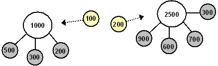

|
На
главную
Глава 6. Основы функционирования рынка
Заклятие Стоимости
Сколько бы признаков идолопоклонничества
не нашлось в Западном обществе, читатель не будет полностью убеждён,
пока мы не предоставим ему научных доказательств существования
Антихриста. Поэтому мы не сможем двигаться дальше в наших рассуждениях
без снятия главного заклятия религии денег.
Кто наложил это заклятие на
русскую душу? Тот самый человек, который ставил целью всей своей
жизни освобождение человечества от проказы капитализма. Это заклятие
– Закон Стоимости.
Понятие Стоимости
Экономика: религия или наука?
У каждого предмета, окружающего
нас, есть главная и единственная характеристика, которой оперирует
экономика, и на которую мы обращаем основное внимание в повседневной
жизни. Это цена, или стоимость предметов, выраженная одним
числом, в деньгах. Именно отталкиваясь от стоимости, экономика
изучает производство товаров, образование цен, движение денег,
и пытается управлять ими.
Какой величиной является стоимость
– объективной или субъективной?
Напомним, что объективностью
считается «независимое от воли и сознания человека существование
предметов, их свойств и отношений». Субъективность – «отношение
к чему-либо, определяемое личными взглядами, интересами или вкусами
субъекта».
От ответа на этот вопрос зависит
всё наше отношение к экономике. Если стоимость – это объективная
величина, то экономика – это точная наука, подобно физике, изучающая
объективные величины и управляющая ими. Если стоимость – это субъективная
величина, то экономика занимается формированием личных взглядов,
интересов и вкусов. Тогда это религия, пусть и математическая
религия, цифровая, псевдо-точная.
Ну а если рыночная экономика
– это религия, то это такая религия, которая основана на принципе
удовольствия от насилия.
Отметим и то, что если один
человек считает экономику объективной наукой с объективными ограничениями,
которые нельзя переступать, а второй человек поклоняется деньгам
как богу, как религии, и не видит для себя объективных ограничений,
то этот второй получает неоспоримое преимущество.
Возникновение стоимости
Как возникает стоимость? Очень
важно понимать, что стоимость любого предмета или товара возникает
только в обмене.
Если я сам вырастил яблоко и
сам его съел, то я могу считать, что съел на копейку или что съел
на сто рублей, но это не будет иметь никакого значения. Если я
подарил яблоко, то его цена тоже не имеет значения.
Но если я хочу обменять мои
яблоки на груши соседа, то возникает вопрос – в каком соотношении
должен происходить обмен? Сколько груш мне должен дать сосед за
каждое яблоко? Мы можем договориться с соседом, что
стоимость
одной груши = стоимости двух яблок
Таким образом, стоимость яблока
будет выражена в груше, а стоимость груши – в яблоке.
Теперь давайте сравним понятие
стоимости и понятие массы. На одну чашку весов мы положим
всё те же два яблока, на другую – грушу. Допустим, что весы уравновесятся.
Тогда мы запишем что
масса
одной груши = массе двух яблок
То есть мы выразили массу яблока
в груше и наоборот.
Представим, что нам надо сравнивать
массу множества предметов – груш, яблок, других фруктов, овощей,
зерна, и так далее. Каждый раз взвешивать попарно все эти предметы
было бы очень неудобно. Поэтому люди договорились взвешивать их
относительно одного и того же условно выбранного
объекта – литра воды (приняв, что 1 литр воды = 1 килограмм).
Вместо воды можно было бы выбрать любой другой эталон, любой другой
всеобщий эквивалент.
То же самое
произошло и со стоимостью. Вместо того чтобы выражать стоимость
множества товаров друг в друге, их выразили по отношению к всеобщему
эквиваленту – золоту. Так же как считают, что яблоки весят 10
кг (то есть 10 литров воды), стали считать, что 10 кг яблок в
обмене эквивалентны, например, 1 грамму золота.
Носить с собой
воду для взвешивания было бы неудобно, поэтому люди носят занумерованные
гирьки. Носить с собой золото тоже неудобно, поэтому носят занумерованные
бумажные деньги (которые изначально были привязаны к золоту).
Абсолютное большинство людей,
включая экономистов, и воспринимают стоимость предмета как его
физическую величину, такую же фундаментальную, как масса.
Относительность стоимости
Исходя из вышеизложенного, запомним
первый важнейший вывод: и масса, и стоимость – понятия относительные.
Они возникают только в результате
обмена или взаимодействия двух предметов, они не есть абсолютные
величины. Стоимость без обмена или масса без взаимодействияне имеют смысла.
Стоимость
есть просто относительный коэффициент обмена одного
предмета (или услуги) на другой.
Наиболее ярко эта относительность
проявляется при денежной реформе, когда от цен откидываются нули.
Стоимости меняются, но соотношения стоимостей – нет.
Точно также не важно, будем
ли мы измерять массу в килограммах или в фунтах, пропорция сохранится.
Субъективность стоимости в пространстве
и во времени
Но между стоимостью и массой
есть разница, которая обычно не осознаётся. В каком бы месте земли
мы не измерили массу одного и того же предмета, она всегда будет
одинаковой.
Но стоимость одного и того же
предмета совершенно различна в разных местах и странах. Она и
должна быть различна, потому что в разных местах люди обмениваются
предметами по-разному.
Возьмите одно и то же яблоко
и взвесьте его в деревне, в городском магазине и в ресторане.
Оно будет весить абсолютно одинаково. Попробуйте продать это же
яблоко в деревне, в городском магазине и в ресторане. Вы сможете
получить совершенно разную стоимость в пространстве.
То же самое происходит и во
времени. Взвесьте яблоко в момент сбора урожая, через месяц
или через полгода. Его масса изменится очень незначительно. Но
стоимость яблока будет отличаться в несколько раз, поскольку
люди захотят по-разному обменять его на другие предметы.
Сколько стоила нефть в средние
века? Нисколько, ибо она была никому не нужна. Сколько стоит нефть
сейчас? Физически нефть не изменилась, изменилось сознание.
Итак, стоимость субъективна
и в пространстве, и во времени.
Субъективность стоимости в одном сознании
И, наконец, главное отличие.
В любой момент времени в любом месте в сознании любого человека
существует только одно значение массы яблока.
Но даже в конкретный момент
времени, в конкретном месте, в сознании конкретного человека существует
не одно и не два, а несколько значений стоимости одного и того
же предмета.
У торговца существует как минимум
два значения – стоимость покупки и стоимость продажи. Но если
мы заглянем в ценники большинства фирм и магазинов, мы увидим
целый набор стоимостей одного и того же предмета, в зависимости
от количества закупаемого товара (розничная, мелкооптовая, крупнооптовая
цена и так далее).
Таким образом, стоимость субъективна
даже в сознании одного и того же человека. Но и это ещё не всё.
Субъективность всеобщего эквивалента стоимости
Никто в мире не в состоянии
изменить массу воды по отношению к массе других предметов. Вода
как всеобщий эквивалент массы постоянна и никому не подконтрольна.
Но как обстоит дело с всеобщим
эквивалентом стоимости – деньгами и золотом? Имеется ли возможность
по желанию менять этот эквивалент?
Золото было выбрано в качестве
эталона стоимости именно как наиболее редкий предмет, соответственно,
наиболее сложно поддающийся манипуляции. Но несомненно, что имеется
возможность по желанию добыть больше или меньше золота.
Когда золото было вытеснено
бумажными деньгами, то возможности манипулирования всеобщим эквивалентом,
то есть измерителем стоимости, стали вообще неограниченны.
*
* *
Таким образом:
i)
Стоимость по определению относительна.
ii)
Стоимость меняется по желанию в пространстве и
во времени.
iii)
Существует несколько значений стоимости одного
и того же объекта в одном сознании.
iv)
Средства измерения стоимости меняются по желанию.
Так наука ли экономика, или
это религия, которая просто использует математику?
Теории
стоимости
Поскольку стоимость – это коэффициент
обмена, то как должны устанавливаться «правильные» коэффициенты
обмена одних товаров на другие? От этого полностью будет зависеть
справедливость общества, которое основано на разделении труда
и на обмене продуктами труда.
Если экономика – это религия,
то откуда в нашем сознании возникло представление о стоимости
как о чём-то абсолютном, физическом, объективном? Представление
о том, что стоимость устанавливается сама по себе, по воле природы,
но не по желанию человека?
Теория стоимости в рыночной экономике
Существовали в мире и сейчас
существуют некоторые паразитные люди, целые прослойки людей и
даже страны, которые приспособились жить трудом других. Вначале
они держали своих рабов в подчинении кандалами, плёткой и клеймом.
Но в том было много опасного и неудобного. Тогда придумали они,
как сменить физические кандалы на рабство сознания, как задурить
голову и заставить подчиняться себе без сопротивления.
На вопрос бедного, почему он
беден, хозяин во все века отвечал одинаково. Ты беден, потому
что ты ленив и глуп, то есть ты или не умеешь или
не хочешь работать.
Этот простейший
принцип был облечён в университетские мантии и положен в основу
высокопарной английской политэкономии. Она стала очень удобна
для того, чтобы объяснять как собственным бедным, так и колониям,
что они сами виноваты в своём положении, а рыночная экономика
– это объективный закон природы.
Понятие стоимости как выражения
затраченного труда появилось впервые в трудах английских «экономистов»
Давида Риккардо и Адама Смита в конце XVIII
века.
Не особо утруждаясь обоснованием
своей теории, Адам Смит просто ввёл столь глубоко научное понятие
как «невидимая рука рынка». Точно так же, как церковники ссылались
во всём на божью волю, Адам Смит списал всё на волю нового бога
– Рынка.
Конечно, это не рука рынка изымала
всё, что удавалось нащупать в колониях, а сальная рука англичанина.
Но этой руке очень хотелось оставаться невидимой.
*
* *
Претерпев множество модификаций,
в наши дни объяснение объективности стоимости в рыночной экономике
сводится к следующему.
Ценатовара определяется на основе спроса и предложения.
Спрос и предложение формируются в открытой конкурентной борьбе.
Конкуренцию выигрывает тот, кто работает лучше, умнее, производительнее,
качественнее. Соответственно, цена устанавливается на минимально
возможном уровне, от чего выигрывают все.
Заметим, что рыночная экономика
хорошо объясняет снижение цен на промышленные товары за счёт механизации
и увеличения производительности труда. Но она предпочитает не
обсуждать причины постоянного роста цен на землю, которую по определению никто производит.
Как видим, рыночная экономика
хотя и признаёт и относительность, и постоянную изменчивость стоимости,
но считает эту изменчивость объективной. Учитывая, что за исключением
последних 30 лет, золото веками было мерилом стоимости, а масса
золота – физическая и объективная величина, то хотя цены на отдельные
товары относительны, но богатство в целом воспринимается как абсолютное.
Рыночная экономика рассматривает
разные виды денег, но никогда не обсуждает философский смысл денег.
Она априори подразумевает, что деньги – это нечто высшее, это
мерило всего.
Трудовая теория стоимости
Второе наиболее
известное объяснение стоимости мы находим в марксизме.
Маркс взял за
основу английскую политэкономиюи попытался её модифицировать. Он пытался объяснить
нищету и открытую эксплуатацию рабочих с одной стороны, и чудеса
промышленного производства с другой стороны.
Приведём современное
марксистское определение стоимости:
Стоимость
– это воплощённый в товаре и овеществленный в нём общественный
труд товаропроизводителей. Величина стоимости товара определяется
количеством труда, общественно необходимого для его производства,
и измеряется рабочим временем и определяет те пропорции, в которых
один товар обменивается на другой.
Чтобы понять
точку зрения Маркса на стоимость, надо вспомнить, что другой опорной
частью его мировоззрения был материализм. Отталкиваясь от естественнонаучных представлений
того времени, Маркс просто не мог рассматривать стоимость как
субъективную величину, он искал доказательства её объективности.
Маркс рассуждал
как крестьянин, как рабочий или ремесленник, для которых продукт
труда выражался в первую очередь в твёрдых физических величинах
– мешках зерна, пудах стали, метрах полотна, штуках сюртуков.
Количество зерна
может быть только объективным, и оно может только расти; затраченный
труд объективен (затраченное время), и он может только расти.
Точно так же и количество стоимости по Марксу должно быть объективным
и должно только расти.
Маркс считал,
что создаваемая трудом рабочего стоимость – это
такая же абсолютная физическая величина, как и мешки
крестьянина. Чтобы сравнить стоимость разных товаров, Маркс ввёл
и всеобщий абсолютный эквивалент стоимости – затраченный труд.
Отсюда Маркс
объяснил и механизм эксплуатации. Феодал отбирал у крестьянина
часть выращенного им урожая, например, 20 мешков из каждых 100.
Иногда феодал заставлял крестьянина отрабатывать на своих наделах,
то есть отбирал его абсолютное рабочее время.
Маркс решил,
что капиталист действует по такому же принципу. Но поскольку крестьянин
кормил себя сам, а рабочий всё же получает оплату от капиталиста,
то капиталист как бы оставляет рабочему часть произведённых им
«мешков» на пропитание, а часть забирает себе точно так же, как
забирал феодал.
Маркс
перенёс на стоимость все характеристики массы – абсолютность,
неизменность во времени, пространстве, независимость от сознания.
Отсюда возникла
и «физическая» теория промышленного воспроизводства. Для того
чтобы получить урожай, надо посеять определённое количество зерна.
Для того чтобы получить сталь, надо положить в топку определённое
количество руды.
Обобщив это,
Маркс стал считать, что для любого воспроизводства нужно соблюдать
некие объективные пропорции затрат на средства производства и
на потребление. Финансовые инвестиции по Марксу – это всё равно
что подвоз топлива или металла к заводским печам.
*
* *
Маркс был материалистом
и объективистом и по отношению к развитию общества в целом. Он
считал, что изучает детерминированные законы мироздания, единственно
возможный путь развития человечества.
Поскольку
общественная практика – критерий истины, а золото в реальной
жизни было общепризнанным эквивалентом стоимости, то золото
в марксизме де-факто стало эквивалентом труда.
Таким своеобразным
образом совместилось несовместимое – любовь к труду и уважение
к идолу насилия и к инструменту эксплуатации.
Другим следствием
из трудового определения стоимости стало уважение и почитание
вещей – поскольку если мы почитаем труд, мы должны почитать и
воплощённый труд.
*
* *
Марксизм был
доминирующей общественной теорией в России на протяжении долгих
лет. Осознаём ли мы или нет, но на сознательном и подсознательном
уровне наши представления о стоимости сформированы именно Марксом.
Маркс наложил
на наше сознание «заклятие стоимости», от которого мы не можем
освободиться до сих пор.
Теории стоимости как религии
Как мы уже показали,
стоимость – коэффициент обмена товара на товар – является величиной
относительной и субъективной. Соответственно, правила формирования
стоимости можно (и единственно возможно) задавать извне,
исходя из философских взглядов на жизнь. Этим, собственно,
и занимаются как рыночная экономика, так и марксизм.
Можно сказать
людям, что они должны обмениваться на основе затраченного
труда. Можно сказать людям, что они должны обмениваться
так, чтобы получить максимальную личную выгоду.
При изменении
философии, мировоззрения, культуры, ценностей в обществе
неизбежно будут меняться и стоимости товаров; будут меняться пропорции,
в которых люди готовы обменивать один товар на другой. Понятия
труда и выгоды тоже будут меняться.
О мировоззрении рыночной экономики,
которое нигде не декларируется, но которое лежит в её основе,
мы подробно говорили в предыдущих главах. Но даже то, что открыто
постулирует типичный учебник рыночной экономики, хорошо подтверждает
нашу реконструкцию. Его отправной точкой является тезис о том,
что «материальные желания человека безграничны, но материальные
ресурсы ограничены».
Соответственно, цель рыночной
экономики – «оптимизация, получение максимального удовлетворения
материальных желаний, то есть максимальное производство, исходя
из имеющихся ресурсов». В последующих главах мы вернёмся к вопросу
о том, безграничны ли материальные желания человека; и правда
ли, что денег никогда не бывает слишком много.
Проблемы трудовой теории стоимости
Давайте рассмотрим, в чём плюсы
и минусы предложения Маркса о том, что обмениваться надо на основе
затраченного труда.
Сравнение
затраченного труда
Первый вопрос
– как сравнить затраченный труд? Если люди на виду друг у друга,
например, в одной бригаде, то это сделать легко. Но если это разные
бригады, если это разный вид труда, если это разные страны, то
такое сравнение резко усложняется. Можно учесть рабочее время,
но очень сложно сравнить интенсивность труда.
Если попытаться
учитывать результаты труда, то получится замкнутый круг – труд
будет оцениваться по продуктам, а продукты по вложенному труду.
Чтобы разрешить
этот парадокс, в Советском Союзе учитывали трудодни и устанавливали
производственные нормы. Такой подход нередко приводил к тому,
что люди не были заинтересованы в повышении своей производительности,
ибо это только увеличивало норму. Также он приводил к постоянному
недоверию (не недорабатывает ли он), и к излишнему контролю над
людьми. Затраты становились важнее, чем результаты.
Труд
с удовольствием и труд без удовольствия
Как сравнить
труд, которой доставляет удовольствие, и труд, который производится
из-под палки?
Один из выходов
– считать, что любой труд почётен и приносит удовольствие. К сожалению,
в реальной жизни не всякий труд доставляет удовольствие.
Поощрение
инноваций
Третья проблема
связана с инновациями и изобретениями. Если до изобретения деталь
изготавливалась, например, за 10 часов, а после изобретения –
за 1 час, то как должна измениться стоимость уже готовых деталей
на складе или в магазине? Внедрение изобретений и новой технологии
не всегда поощрялось такой системой.
Относительность
необходимого труда
Маркс справедливо
писал, что капиталист платит рабочему не за весь труд, который
рабочий вкладывает в производство, а только за ту часть, которая
необходима для жизни рабочего. На самом деле, капиталист платит
только за ту часть необходимого времени, которое рабочий
проводит на производстве.
Пусть рабочий
на фабрике работает 8 часов в день, из них 4 часа он создаёт необходимый
продукт для себя, и 4 часа – прибыль для капиталиста. Пусть второй
рабочий после фабрики ещё 3 часа работает на своём садовом участке.
Пусть работа на садовом участке покрывает половину потребностей
рабочего, тогда для жизни ему достаточно получить оплату только
за 2 часа рабочего времени на фабрике, и он может принести большую
прибыль капиталисту.
Более того,
для рабочего с семьёй необходимое время – одно, для холостого
– другое. Сам уровень жизни рабочего – понятие относительное.
Похожие проблемы
возникают и в социализме – следует ли учитывать труд крестьянина
на своём участке? Как компенсировать рабочему, который переехал
в город, невозможность работы на своём участке? И так далее.
Качество
и затраты труда
Как сравнить
качественно выполненный труд и менее качественно (как в силу желания,
так и в силу способностей)?
Если обменивать
уголь на зерно, то качество труда можно измерить объективными
показателями, и в соответствии с ними установить, например, различные
сорта для каждого продукта.
Но если обменивать
сапоги на платья, то этот обмен в принципе субъективен и посторонний
человек не может устанавливать «объективные» правила обмена.
Интеллектуальный
и физический труд
При всём желании,
невозможно объективно сравнить затраты человека на интеллектуальный
и на физический труд; невозможно измерить творчество.
Стоимость и S-кривая потребностей человека
Заметим, что
рассуждения Маркса о том, что в основе обмена должен лежать затраченный
труд, всё же достаточно верны для людей, которые находятся на
первом участке S-кривой
потребностей человека.
*
* *
Люди, находящиеся
в нужде, обменивают товары и рабочее время по принципу экономии
своего времени и максимальной практической отдачи.
Крестьянин прекрасно
знает, сколько займёт выращивание картошки по сравнению с выращиванием
пшеницы. Он знает, скольких людей накормит пшеница, скольких картошка,
а скольких – малина. Исходя из этого он определяет, нужен ли ему
обмен картошки на пшеницу и специализация в одном из этих занятий.
Крестьянин знает
и сколько времени ему сэкономит использование плуга по сравнению
с сохой или ветряная мельница по сравнению с жерновом. Поэтому
он действительно мыслит обменом труда на труд.
Так же поступает
и небогатый городской человек – он взвешивает, проще ли ему самому
сделать ремонт в квартире, или нанять другого; приготовить обед
самому или сходить в кафе.
*
* *
На втором
этапе S-кривой,
когда базовые потребности человека удовлетворены, на этапе удовольствий,
логика человека, а вместе с ней его представления о стоимости,
начинают меняться. У него уже больше свободных денег.
Выбирая между
удовольствиями, человек уже не смотрит только на функциональность
и затраченное или сэкономленное время. Он сравнивает эффект от
удовольствий. Он меняет одно удовольствие на другое, скажем,
возможность сходить в театр на возможность купить торт. Он часто
готов переплатить.
Здесь выиграет
не то удовольствие, которое сэкономит время (или на которое было
затрачено больше труда), но то, которое даст большее удовлетворение.
*
* *
На третьем
этапе S-кривой,
когда речь идёт о власти (в рыночной экономике), человек уже не
сравнивает ни время, ни труд, ни удовольствия. Он сравнивает только
то, что даст ему большее приращение статуса, власти, престижа,
денег. По этому принципу он и определяет стоимость товара.
На
третьем этапе уже не человек определяет стоимость товара,
а товар определяет, какой человек сможет его купить.
*
* *
Эти закономерности
легко увидеть на примере автомобилей. Все автомобили, предлагаемые
сегодня на рынке, можно разбить на три группы – экономичные, средний
класс (performance)
и статусные.
Когда человек
выбирает экономичный автомобиль, он ищет максимум функциональности
за минимальную цену. Он сравнивает двигатель, расход бензина,
надёжность, долговременность, проходимость, ремонтопригодность.
Автомобиль для него является средством передвижения из точки А
в точку Б с минимальными затратами.
При выборе машины
среднего класса он уже готов переплатить существенные деньги за
удовольствия. Его начинают интересовать кожаные сиденья (которые
стоят дороже двигателя), красивые фары, рассекатели воздуха, и
так далее. Он начинает воспринимать саму езду на машине как приключение
и приятное времяпровождение.
При выборе престижной
машины человек смотрит не столько на её внутренность, сколько
на статус. Он не просто не стремится сэкономить, но он хочет купить
настолько дорогую машину, чтобы, глядя на нее, сказали – эта машина
стоит столько-то тысяч долларов, а её хозяин занимает определённое
положение в обществе.
Можно выделить
целые группы товаров, соответствующие разным участкам S-кривой,
и для каждой группы товаров существуют свои под-законы стоимости.
В первую войдут
утилитарные – бензин, электричество, простые продукты питания,
дешёвая одежда, домашний телефон, автомобиль «Жигули» и так далее.
Во вторую – косметика, духи, модная одежда, сотовый телефон, автомобиль
«Тойота». В третью – дорогие рестораны, одежда от модельеров,
автомобиль «Мерседес».
Закон стоимости
меняется в соответствии с S-кривой
не только для отдельного человека, но и для классов и для обществ
в целом. Невозможно правила обмена с одного этапа пытаться применить
на другом этапе.
Советская теория стоимости
Таким образом,
теория трудовой стоимости Маркса несла множество проблем, которые
невозможно было разрешить, даже при всём желании поверить в неё.
На практике
в СССР была создана третья теория стоимости, которая не
описана в экономических учебниках. Выход был найден не в попытке
организовать абсолютно справедливый обмен; не в попытке постоянно
считать, кто кому должен.
В 1920-е годы
в экономике СССР начали следовать христианскому (или коммунистическому)
принципу. Не ищи максимальной прибыли, не ищи и равенства в обмене.
Наоборот, не бойся отдать больше, чем получишь. Работай так много
и так хорошо, как можешь, а государство распределит общие результаты
труда по принципу, кто больше нуждается.
Деньги выполняли
функцию универсальных талонов, на которые можно было выбрать товары,
которые скорее распределялись, чем продавались. Для поощрения
отдельных достижений выдавалось больше или меньше талонов.
По иронии судьбы,
чем сильнее становилось Советское общество, тем больше насыщалось
оно товарами. Тем больше людей получали всё необходимое и переходили
на этап потребления удовольствий, и тем хуже начинал работать
основной закон стоимости СССР.
Три мифа религии денег
Чтобы продолжить
рассмотрение модели функционирования рынка, нам необходимо разоблачить
три устойчивых мифа рыночной экономики – (1) миф о сложности и
о глубине экономической теории, (2) миф о производстве, и (3)
миф о том, что рост экономики автоматически приводит к улучшению
жизни людей.
Арифметическая модель мира
Любой учебник по экономике изобилует
сложными математическими формулами, замысловатыми кривыми и различными
графиками. Экономика считается очень точной и детальной наукой.
Но обратим внимание на то, что
в своей основе религия денег не идёт дальше арифметической модели
мира. Помимо плюса и минуса, используются только три дополнительных
действия. Умножение (количество товара на цену единицы товара),
деление (например, общие расходы на единицу товара) и разновидность
деления-умножения – процент (для долгов).
Каждый
человек в мире описан в виде счётной книги. Все возможные
отношения между людьми сведены к четырём арифметическим
действиям.
Переход в рыночную экономику
и является переходом к такой арифметической модели мира с полным
откидыванием любых других соображений, как мешающих рынку, как
антирыночных.
*
* *
Сама идея описать весь мир,
используя только арифметику, звучит довольно своеобразно. Попробуйте
построить работающую модель, например, автомобиля, описывая каждую
его деталь только одним цифровым дескриптором, а взаимодействие
между любыми деталями – только арифметическими операциями.
Но в финансовых отчётах огромных
корпораций вы не увидите ни интегралов, ни производных, никакой
сложной математики – только четыре действия. Товары не будут описаны
сложными физическими характеристиками – только ценой. Любой бухгалтер
прекрасно обходится самым простым калькулятором (а успешному бизнесмену
совершенно необязательно заканчивать школу).
В менеджменте даже присутствует
понятие бизнес-модели, то есть того, как сложную деятельность
реальной фирмы свести к этим четырём действиям. Если не удастся,
то бизнес будет нежизнеспособен. Например, показ фильма по общедоступному
ТВ сам по себе не ведёт к денежной транзакции. Поэтому в фильм
вставляют рекламу, которая заставляет телезрителя купить товар,
и часть выручки за этот товар поступает телеканалу как оплата
за рекламу.
Чтобы хоть как-то приспособить
эту примитивнейшую модель к реальной жизни, бухгалтерия использует
приём открытия субсчетов и учёта разных параметров фирмы на отельном
субсчете. Например, субсчет для оборудования, для интеллектуальной
собственности, для пенсионных выплат и так далее. Затем устанавливаются
правила взаимодействия счетов. Но всё равно они сводятся к арифметике
из четырёх действий. Поэтому правила бухгалтерского учёта становятся
очень сложными, запутанными и постоянно меняются. Что открывает
большое поле для финансовых махинаций.
Торговля против производства
Очень важно понять, что главная
ячейка религии денег, формула прибыли, не только не содержит ничего
связанного с развитием производства, но наоборот, она относит
производство к затратам, и потому стремится его сократить.
Максимальную прибыль надо получить
во времени. Простейший, и в то же время самый эффективный
способ извлечения прибыли, это способ посредника, способ перепродажи.
Купить товар у одного человека по малой цене и продать его другому
за большую цену.
Чем больше перепродаж сделает
торговец, чем чаще он обернёт свой капитал, тем выше будет прибыль.
Любое производство требует более долгих вложений и уменьшает прибыль.
Торговец идёт на производство только в тех случаях, когда прибыль
нельзя получить перепродажей готовых товаров.
Поэтому в религии денег не может
быть такого понятия как «способ производства». Капиталистический
способ производства – это частный случай перепродажи, перепродажи
рабочего времени наёмного работника.
*
* *
Производство возникает как исключение,
возникает иногда и только в определённых условиях:
1)
когда не получается получить прибыль простым грабежом
или перепродажей,
2)
когда существует сильная конкуренция за власть
и страх её потерять,
3)
когда от производства ожидается прибыль, которая
относительно выше перепродажи или ничего неделания.
Если эти условия нарушаются,
производство останавливается.
Производство толкают и искусственно
установленные государством и обществом формальные (законы) или
неформальные (мораль, культура) внешние ограничения. Эти ограничения,
словно стенки канала, заставляют течь воду в нужном направлении.
Нет внешних стенок, и вода растекается. Нет детального регулирования,
нет и производства. Сама по себе формула прибыли производство
не запускает.
Мы привыкли к слову «экономика»
и к связанному с ним ростом производства. Понятие экономика
происходит от греческого слова «oikonomike»,
ведение домашнего хозяйства. Интересно, что в иврите, языке евреев,
знатоков рыночной экономики и финансов, слова «экономика» вообще
нет. Оно переводится как «калькаля», от итальянского «калькулятио»,
то есть калькуляция – всё та же счётная книга.
«Экономика свободного рынка»
– это бессмысленное словосочетание, что-то вроде «домашнее хозяйство
торговой лавки».
*
* *
Прибыль не имеет отношения к
хозяйству, прибыль достигается через торговлю, иными словами через
коммерцию, куплю-продажу. Купля-продажа и является основой всех
отношений в религии денег.
Загляните в годичные отчёты
любой корпорации, организации, правительства или налоговую декларацию
отдельного человека. Они все построены по принципу всё той же
счётной книги средневекового купца.
Интересно, что графа расхода
в отчётах корпораций имеет два раздела – «cost»
(стоимость) и «expenses»
(издержки). В издержки включаются текущие расходы на деятельность
фирмы, включая зарплату, оборудование и так далее. Зачем же тогда
раздел «cost»?
«Cost» – это стоимость
закупленных фирмой готовых товаров для перепродажи.
Когда компании сообщают о полученной
за год или квартал прибыли (profit),
то на самом деле это не есть прибыль в нашем понимании. Это полная
выручка минус «cost».
«Profit» правильнее
перевести как «барыш», «нажива». И только потом от прибыли отнимаются
издержки и вычисляется собственно чистая прибыль (earnings).
Все сотрудники корпорации относятся
к её расходам, которые следует уменьшать. Далее, чем меньше денег
вложил торговец, и чем большую прибыль он получил, тем
лучше. Поэтому чем выше стоимость основных фондов (то есть принадлежащих
фирме производственных машин, механизмов, зданий), тем хуже
прибыльность и финансовые показатели фирмы.
Естественно, что финансовые
показатели выше у тех фирм, которые заняты наиболее чистой куплей-продажей,
а не производством.
Для домашнего хозяйства это
выглядит идиотизмом. Но отчёты и не предполагают, что кто-то должен
заниматься производством или хозяйством. Все счётные книги корпораций
сохранили своё первоначальное значение – описать торговую лавку.
Счётные книги толкают корпорации
к тому, чтобы те избавлялись от собственности, от производства,
от служащих, и стремились к своему средневековому идеалу – к пустышке.
Рост экономики как рост транзакций
Поскольку главным «положительным»
чувством в религии денег является жадность, а главной целью –
увеличение своей цифры, то общество в целом, чтобы держать всех
довольными, обязано стремиться к увеличению цифры каждого из его
членов.
Обычно такое увеличение связывают
с ростом экономики, с ростом производства, на уровне страны –
с ростом ВВП, валового внутреннего продукта. Правительства ставят
своей главной целью увеличить ВВП, добиться роста на X
процентов в год. Но как мы увидели, экономика – это торговля,
а производство – частный случай перепродажи.
Поэтому
рост экономики приносит простое увеличение торговых транзакций.
Почему увеличение транзакций
ведёт к росту экономики? Представим такой пример. Два человека
растят на своих огородах огурцы и помидоры и сами же их едят.
В этом году они собрали и съели урожай, вдвое больший, чем в предыдущем.
Но денег от этого у них не прибавилось, в счётных книгах пусто,
экономика не растёт.
Затем один сосед начинает растить
только помидоры, и относит их в лавку к купцу, который даёт ему
за помидоры десять долларов. Другой сосед растит только огурцы,
и тоже отдаёт их купцу за десять долларов. Теперь у каждого из
соседей есть деньги. Естественно, что следующим шагом они идут
к тому же купцу и тратят эти деньги на отсутствующие у первого
огурцы, у второго – помидоры.
На самом деле их жизнь лучше
не стала. Но с точки зрения счётной книги, раньше эти люди ничего
не имели, но сейчас каждый из них стал богаче на десять долларов.
Выросла экономика, выросло товарное производство, купец получил
прибыль, государство получило налоги, образовались новые рабочие
места – продавца в магазине, бухгалтера, налогового инспектора,
банкира.
*
* *
В целом, чтобы увеличить торговлю,
есть два способа. Первый – увеличить скорость оборота существующих
товаров. Но это имеет предел. Второй – увеличить число
товаров, которые находятся в обороте. Новые товары можно создать
производством, но дешевле просто взять существующие, которые
ещё не находятся в обороте, и запустить их в оборот.
Экономика оцифровывает и вводит
в оборот то, что было раньше бесплатно. Этим она заставляет людей
думать, что у них стало больше денег, хотя на самом деле жизнь
стала хуже. Ведь мы помним, что стоимости – это только относительный
показатель.
Раньше вода была чистая из колодца,
теперь её продают в бутылках, раньше медицина была бесплатная,
теперь за деньги, раньше можно было парковаться бесплатно, теперь
– за деньги и так далее.
Даже формально, статистически,
уровень жизни не зависит от ВВП. В Саудовской Аравии грамотность
ниже, чем в Шри-Ланке, хотя средний доход в 15 выше. Детская смертность
в Бразилии в 4 раза выше, чем на Ямайке, хотя доход вдвое больше.
*
* *
Подумайте, (1) способствуют
ли росту экономики следующие события. И (2) становится ли от этого
лучше жизнь человека.
§
Три женщины воспитывают своих детей дома, готовят
обед, убирают. Или одна из этих женщин идёт работать официанткой,
другая – поломойкой, третья – нянькой.
§
Человек готовит дома. Или человек ест в Макдональдсе,
а затем покупает лекарства от изжоги.
§
Человек ест в меру. Или человек объедается до ожирения,
а потом покупает средства для похудения.
§
Человек ходит пешком. Или человек покупает автомобиль,
а потом покупает беговую дорожку.
§
Человек дышит чистым воздухом. Или человек курит
сигареты, заболевает раком, что увеличивает производство лекарств.
§
Автомобиль попадает в аварию, что приводит к увеличению
производства новых автомобилей.
§
Пожарник находится без работы, он поджигает лес,
появляется работа и растёт производство средств пожаротушения.
§
Военная корпорация изготавливает ядерные ракеты,
а затем систему противоракетной обороны (тоже реальный случай).
*
* *
В древней сказке заветным желанием
короля было, чтобы всё, к чему он прикасается, превращалось в
золото. Всё, к чему прикасается религия денег, превращается в
сознании человека в деньги. Король вскоре не смог ни есть, ни
пить, и умер от своей способности.
Модель
рыночной экономики
Чтобы представить,
как функционирует общество в рыночной экономике, давайте рассмотрим
структурную схему рынка, которая вытекает из формулы прибыли.
Затем мы продолжим рассмотрение основных вопросов политэкономии.
I.
Аксиомы рыночной экономики
Каков базовый
набор аксиом, минимальный набор ключевых правил, которые лежат
в основе рыночной экономики? Мы можем выделить три части модели:
структура, цель и операции в структуре.
1. Структура
Структура рыночной
экономики – это иерархия людей, в которой каждому человеку соответствует
цифра его состояния.
Состояние человека
состоит из принадлежащей ему собственности. Собственность, обычно,
это материальные вещи, но она может быть и нематериальной, например,
торговая марка или информация.
2. Цель
Целью каждого
человека в отдельности является прибыль, то есть
всяческое приумножение стоимости своей собственности и движение
вверх по иерархии.
Целью иерархии
в целом является увеличение стоимостей каждого из членов
иерархии. Поскольку это – единственный способ предотвратить или
сгладить внутренние противоречия между членами иерархии.
3. Операции
В физическом
мире модель рыночной экономики допускает только две операции
– купля и продажа. Купля и продажа собственности одного члена
иерархии другому. В модели этим операциям соответствуют два арифметических
действия – плюс и минус.
*
* *
Это всё. Какой
бы сложной не казалась и не пыталась казаться рыночная экономика,
но вся её аксиоматика заключается в приведённых выше трёх пунктах.
Полнота модели
Поскольку
экономика – это модель управления всем миром, то для полноты
этой модели необходимо:
1)
всё, что может быть предметом физического или воображаемого
обмена, должно быть оцифровано и
2)
отдано в чью-либо собственность,
3)
любым изменениям в физическом и воображаемом мире
должны соответствовать изменения в модели; и обратно, изменения
в модели должны приводить к изменениям в остальном мире.
Каждый раз, когда кто-то прикасается
к какой-либо вещи, должна происходить финансовая транзакция купли-продажи,
изменяться чьё-либо значение в иерархии, пусть и на очень маленькую
величину.
Наиболее полно на сегодняшний
день оцифрована земля, и даже такое мелкое событие как стоянка
машины на пятачке земли на пять минут вызывает транзакцию в модели
– оплату за парковку.
Такое маленькое
изменение сознания человека, как показ ему картинки, тоже вызывает
финансовую транзакцию – оплата рекламы на Интернет-сайтах ведётся
за каждого посетителя. В данном случае оцифрованная собственность
– мозг человека.
А если что-то нельзя посчитать,
то есть включить в управляющую модель, то религия денег предпочитает
это либо не замечать, либо уничтожить.
*
* *
Рассмотрим полноту
оцифровки на интересном примере. Как выразить в деньгах страдания
человека? В США такую оцифровку регулярно проводят суды, заставляя
выплачивать огромные штрафы тех, кто привёл к этим страданиям.
Это может показаться не экономической проблемой, но если такую
оцифровку не делать, то возникают ситуации, похожие на случай
с Форд Пинто.
В 1970-е годы
компания Форд выпустила автомобиль Пинто, который был спроектирован
с дефектами. Если Пинто сталкивался с другим автомобилем под определённым
углом, то бензин из бензобака Пинто попадал в его пассажирский
салон и воспламенялся. Те, кто находился в Пинто, сгорали заживо.
Когда стали поступать сообщения об авариях, инженеры Форда нашли
причину дефекта и предложили вариант исправления. Для этого требовалось
вернуть на заводы сотни тысяч машин и переделать конструкцию бензобака.
Экономисты Форда,
используя статистику аварий, подсчитали, сколько примерно таких
катастроф произойдёт за все годы эксплуатации Пинто, и сколько
людей сгорит заживо. Они подсчитали, в какую сумму обойдутся выплаты
по страховкам и искам пострадавших. Они также подсчитали, что
затраты на переделку всех Пинто в несколько раз превысят затраты
по искам. Соответственно, Форд решил, что экономически выгоднее
сжечь людей, чем переделывать автомобили, и спрятал все документы.
Поскольку Пинто
продолжали гореть факелами на дорогах, судам постепенно удалось
восстановить истину. Они наказали Форд огромными штрафами. Теперь
в аналогичных ситуациях Форд и другие компании сравнивают убытки
от переделки с убытками от потенциальных штрафов. Только резко
увеличив денежную стоимость человека в счётной книге Форда, до
него удалось довести мысль о ценности человеческой жизни.
Понятие товара
Просто так передавать
от человека к человеку цифровые значения или собственность не
имеет смысла (за исключением подарка и грабежа). Поэтому для получения
прибыли необходим некий посредник. Он называется товаром.
Товаром может быть всё, что угодно, не обязательно физический
предмет.
Товар
– это носитель стоимости и посредник при получении прибыли.
Каким образом
можно получить прибыль с помощью товара? Это можно сделать только
в том случае, если существует разница в стоимости товара,
то есть разница в воспринимаемой ценности одного и того же товара
для одного человека или для разных людей.
Иными словами,
прибыль возможна, если люди или один и тот же человек готовы поменять
один и тот же товар на другие в разной пропорции. Подробнее вопрос
возникновения разницы в стоимости мы рассмотрим ниже.
Забирая себе
разницу между значениями стоимости товаров в сознании разных людей
(или одного человека), человек увеличивает свою собственность
и положение в иерархии.
Понятие денег
Какова функция
денег в рыночной экономике? Говоря о богатстве, человек обычно
в первую очередь думает о деньгах и фокусируется на деньгах. На
самом деле,
Деньги
– это в первую очередь средство транспортировки стоимости
товаров между сознаниями разных людей.
*
* *
Представим,
как происходит обмен товарами без денег.
Один житель
селения из рук в руки передаёт другому зерно, взамен получает
шерсть. Теперь представим, что эти люди живут в разных селениях,
которые расположены далеко друг от друга. Для перевозки шерсти
и зерна нужен транспорт, например, ослы. В одном селении на ослов
грузят зерно, они приходят в другое селение, отдают зерно, на
них грузят шерсть и возвращают ослов жителям первого селения.
Представим также,
что у жителей есть всего 10 ослов, и что они обмениваются шерстью
на зерно в пропорции 1 мешок шерсти = 2 мешка зерна. Тогда вначале
каждый осёл несёт по 2 мешка зерна, а на обратном пути он несёт
1 мешок шерсти.
Теперь представим,
что шерсть не нужна немедленно жителям первого селения. Тогда
жители второго селения могут использовать ослов, чтобы привезти
ткани из третьего селения.
Деньги – это
такие же ослы, но не для перевозки физических товаров, а для перевозки
их стоимости.
1
доллар = 1 условный осёл.
Один долларо-осёл
может перенести 1 единицу стоимости. Для перевозки одного пальто
стоимостью 50 долларов надо иметь 50 долларо-ослов. Для перевозки
мешка крупы весом 20 кг и стоимостью 50 центов за кг достаточно
10 долларо-ослов.
В чём разница
между настоящими ослами и долларо-ослами?
1)
Товары и долларо-ослы путешествуют одновременно,
но в противоположных направлениях – осёл приходит к тому,
кто отдал товар, от того, кто его получил.
2)
Для перевозки стоимости люди обязаны использовать
только определённых долларо-ослов (национальную валюту).
3)
При появлении долларо-осла люди обязаны
обменять на него свой товар по заранее объявленной ими цене (принимать
деньги к оплате).
4)
При прибытии товара люди обязаны отдать
владельцу товара договоренное количество ослов.
5)
Есть люди (банкиры), которые постоянно контролируют
выпуск ослов на дороги.
Помимо аналогии
с ослами, можно использовать аналогию между долларами и электронами.
Как электроны переносят заряды, так доллары переносят стоимость.
Для переноса одного заряда нужен один электрон, так же для переноса
единицы стоимости нужен один доллар.
*
* *
Посмотрим, как
понятия долга, банка, инфляции и курса валют представляются в
«ослиной» модели.
Долг
– мне нужны товары, но у меня нет в наличии ослов. Я прошу ослов
взаймы у соседа, и обещаю отдать с процентами, то есть больше
ослов, чем взял. Естественно, что я могу вернуть ослов, только
продав кому-то свой товар.
Банк
– ослиное стойло. Люди отводят туда свободных ослов, чтобы их
не угнали бандиты. Приведённых ослов банк тут же даёт взаймы тем,
у кого их нет, под процент.
Кроме того,
банки знают секреты, как размножать ослов (подробнее об этом –
позже). Разводить ослов разрешено только банкирам. Ослы, разведённые
вне банков, считаются фальшивыми и при выявлении уничтожаются.
Инфляция
– если люди видят, что свободных ослов становится больше, чем
товаров, то они начинают грузить на каждого осла всё меньше и
меньше товара. Люди боятся, что если они отдадут свой товар за
малое количество ослов, то они не смогут обратно поменять ослов
на нужный им другой товар.
Инфляция может
возникать в двух случаях – или сократилось производство товаров,
или банки и правительства выпустили на дороги слишком много ослов.
Зная эту особенность правительств, люди пытаются предугадать,
сколько свободных ослов ходит по дорогам. Поскольку точно никто
не знает, то слухи и косвенные признаки играют большую роль.
Центральные
ослиные стойла, центральные банки, постоянно держат резерв лишних
ослов или отлавливают свободных, если тех становится слишком много.
Снижение
цен – иногда ослов не хватает, тогда
люди готовы нагрузить на каждого осла дополнительный товар, лишь
бы получить ослов и обменять на необходимое им.
Курс валют
– в разных странах товары возят на ослах разного цвета. Например,
в одной стране на белых, а в другой – на зелёных. Если человек
хочет взять товар из соседней страны, он должен пригнать своих
ослов в специальный пункт обмена ослами, называемый валютной биржей.
В зависимости
от того, сколько есть желающих поменять зелёных ослов на белых,
биржа устанавливает соотношение обмена. Например, 1 зелёный осёл
= 30 белых ослов. Если число пребывающих белых ослов будет увеличиваться,
а зелёных – нет, то за каждого зелёного осла будут давать всё
больше белых, и наоборот.
Эволюция и идеализация денег
Давайте рассмотрим,
как происходила эволюция денег в сторону их идеализации, в сторону
выполнения их главной функции – транспортировки стоимостей между
сознаниями людей, и в сторону откидывания всех второстепенных
функций.
Итак, в начале
развития торговли шёл обмен товара на товар. Если товары находились
в разных странах, то обмен осуществлял купец. Смыслом существования
купца было так провести обмен, чтобы получить личную выгоду.
Например, купец
менял шерсть на зерно. В чужой стране он менял 3 мешка шерсти
на 6 мешков зерна, в своей стране он менял обратно 4 мешка зерна
на те же 3 мешка шерсти. В результате у купца образовывался навар
в 2 мешка зерна.
Для удобства
купцов в торговых городах (обычно в портах) устраивались склады.
Вместо того чтобы носить товар с собой, в момент сделки купец
просто писал записку начальнику склада с приказом выдать зерно
человеку, купившему его у купца.
По мере развития
торговли обмены становились всё сложнее и сложнее. Купец мог менять
шерсть на ткани, ткани на оружие, а уже оружие на зерно. Не всегда
купец обменивал товар на другой товар немедленно.
Нужен был некий
всеобщий эквивалент товара, который было бы сложно подделать.
Им стало золото.
Теперь купец
обменивал товары на золото и обратно золото на товары. Это дало
огромное удобство купцу – товары быстро портились, занимали много
места. Золото было компактно и вечно. Его было очень легко накапливать
и сохранять.
В целях безопасности
купец старался не носить золото с собой. Он держал золото на охраняемом
складе, и в момент покупки опять просто выдавал продавцу расписку
– чек. Продавец, как правило, сам был купцом, и тоже держал
своё золото на складе.
Вместо того
чтобы таскать золото из одного места в другое, купцы просто обменивались
расписками, а золото не покидало склады. На складах, которые стали
называться банками («bank»
по-английски – хранилище), вели учётные книги, в которых напротив
фамилии каждого купца записывали, сколько ему принадлежит золота.
Если появлялся чек, то против фамилии выписавшего чек ставили
минус (дебит), а против фамилии предъявившего – плюс (кредит).
Чем больше золота было приписано к фамилии купца, тем он больше
радовался и гордился этим.
Эта система
банковского учёта сохранилась неизменной и до наших дней.
Не всегда использование
чеков было удобным, ибо кто-то мог выписать и фальшивый чек, а
для проверки требовалось идти в банк, который мог находиться в
другой стране. Поэтому выпускались золотые монеты, которыми можно
было расплачиваться на месте. Но золото – тяжёлый металл, и таскать
большое количество монет было неудобно.
Поэтому придумали
выпускать своеобразные «чеки на предъявителя», заведомо подтверждённые
банком – бумажные купюры, которые выпустивший их банк принимал
безоговорочно и взамен немедленно выдавал золото.
При выпуске
каждой купюры банк обязан был держать в своём сейфе соответствующий
ей эквивалент золота. Но банки быстро сообразили, что можно выпустить
больше бумажных купюр, чем хранится золота в банке на самом деле.
Это возможно, поскольку купюры предъявляются к обмену на золото
довольно редко, скажем 1 купюра из 10 в течение дня. Тогда можно
держать в банке золото на покрытие только 10 процентов выпущенных
купюр.
Банк как бы
начал «создавать» золото из бумаги и давать его в кредит под процент,
процент забирать себе, таким образом делать прибыль из воздуха.
Поскольку жадность банкиров не имела границ, они так увлекались
выпуском бумажных денег, что бумажки обесценивались, и многие
банки разорялись.
С изобретением
телефона и телеграфа стал возможен следующий шаг. Вместо того
чтобы носить бумажный чек, клиент мог просто позвонить в банк
или послать телеграмму с указанием переписать в счётной книге
банка золото с его фамилии на фамилию продавца товара.
С изобретением
компьютеров все счётные книги были введены в их память. Стало
возможным не только мгновенное изменение записей внутри банка,
но и быстрый обмен записями между банками. Бумажный чек из одного
банка в другой посылается физической почтой, его обработка и сверка
подписи занимает 7-10 дней. Электронная транзакция происходит
в реальном времени.
*
* *
Итак,
эволюция денег происходила по следующей схеме:
Товар
– Золото – Чек – Наличные – Электронные
Из физического,
материального идола – золота, деньги стали просто цифрой, настоящим
идеальным идолом, который живёт только в сознании.
Разделение функций накопления и обращения
Деньги, начав
свой путь с физического товара и золота, которые лежали в сундуке
у купца, со временем идеализировались и приняли вид своей главной
функции, функции переноса стоимости. Электронные деньги идеально
подходят для выполнения ослиных обязанностей – они мгновенны,
не существуют физически, их сложно украсть, их легко отслеживать
и ими очень легко управлять.
Заметим,
что помимо функции переноса стоимости, золото выполняло вторую
важнейшую функцию – оно было средством накопления.
Именно по количеству
накопленного золота определялось состояние и место в иерархии
– как человека, так и страны. Золото было главным предметом накопления,
то есть культового поклонения.
При идеализации
функция накопления пропала. Цифра в памяти компьютера уже не может
быть средством накопления. Ибо золото есть само по себе товар,
стоимость которого может меняться относительно других товаров.
Но цифра в памяти компьютера имеет смысл как товар только как
кредит (ослы, которых одалживают для перевозки).
Разделение функций
обращения и накопления началось с выдачи банками первых кредитов.
Окончательное признание факта разделения было сделано в 1971 году,
когда доллар США, а вместе с ним почти все мировые валюты, были «отвязаны» от золотого стандарта. До 1971
года теоретически любому доллару должно было соответствовать физическое
золото в банке, после – нет.
Это привело
к новой ситуации. Раньше деньги на сберегательном счету были эквивалентны
хранению в банке золота. Теперь для сохранения функции накопления
деньги, которые находятся на счету в банке, должны быть немедленно
вложены в какой-либо товар или в предмет поклонения.
Если
любая прибыль раньше автоматически имела эквивалент в золоте,
то теперь прибыль, полученную в деньгах, ещё надо вложить
в какой-либо товар.
Обычно так и
происходит – банк от своего имени вкладывает деньги клиента в
какой-либо товар. Он даёт кредит правительству, фирме или частному
лицу, которые записывают своё имущество как залог. Фактически,
банк вкладывает деньги в это имущество. Например, если банк дал
кредит на покупку дома, то он вложил деньги в дом. Если он дал
кредит на закупку бананов, то он вложил деньги в бананы.
Особый случай
– когда деньги вкладываются в долговые обязательства правительств.
Мы рассмотрим этот случай в дальнейшем.
II.
Получение прибыли с помощью товара
Вернёмся к базовым понятиям
рыночной экономики и посмотрим, каким образом товар даёт возможность
получения прибыли.
Как мы говорили, экономику интересует
не сам товар, не его физические или потребительские свойства.
Её интересует только одно свойство товара – стоимость.
Прибыль
приносит даже не стоимость товара как таковая, а изменение
стоимости, или разница в стоимости одного и
того же товара в сознании покупателя и продавца.
Математически, изменение стоимости
– это первая производная от стоимости. Нас интересует максимизация
этой производной.
*
* *
Как возникает разница в стоимости
товара и как её можно увеличить?
А.
Разница в стоимости
одного и того же товара может существовать как в сознании одного
человека, так и в сознании разных людей.
Б.
Разница в стоимости
одного и того же товара может существовать:
1.
в пространстве,
2.
во времени,
3.
в результате структурных преобразований товара
(т.е. его изменения).
В.
Разница в стоимости
может быть увеличена как снижением стоимости покупки, так
и увеличением стоимости продажи.
Далее, для того,
чтобы увеличить разницу в стоимости товара, надо ответить на вопрос,
зачем люди обмениваются товарами?
Г.
Обмен (обобщённо)
происходит в соответствии с участками S-кривой:
1.
в силу необходимости,
2.
для удовольствия,
3.
для увеличения статуса и власти.
Чтобы рассмотреть
все возможные комбинации, можно составить матрицу комбинаций
А х Б х В х Г. Приведём некоторые примеры.
*
* *
При обмене в
силу необходимости разница возникает, если один и тот же
товар представляет разную необходимость.
Для одного человека
В
пространстве:
§
Снижением стоимости покупки – выплата низкой зарплаты
или установление низких закупочных цен, например, крестьянам.
§
Увеличением стоимости продажи – продажа необходимого
по высоким ценам, пользуясь стеснёнными обстоятельствами человека,
например, продажа сахара в единственном магазине в деревне.
§
Обычно этот способ предполагает ту или иную степень
монополизации торговли на определённой территории.
Во времени:
§
Снижением – установка низкой закупочной цены, пользуясь
срочностью, например, ломбард.
§
Увеличением – установка высокой продажной цены,
пользуясь срочностью, например, такси в аэропорту, платный туалет
или продажа еды с наценкой в дороге.
§
Успех этого способа зависит от выбора времени и
места торговли.
В структуре:
§
Снижением – нахождение дефектов или недостатков
в товаре, который продаёт человек, сравнением с другими более
дешёвыми функциональными товарами.
§
Увеличением – расхваливание функциональных свойств
товара или придание в сознании покупателя товару новой более важной
функции. Например, это не просто сок, а средство похудения.
§
Успех этого способа зависит от умения торговца
лгать.
Для разных людей:
В пространстве:
§
Снижением – поиск мест закупки товаров, где затраты
в силу природных или иных условий будут наименьшими. Например,
разница между затратами на выращивание помидоров в Молдавии и
в Карелии. Здесь же разница между уровнями оплаты труда в бедных
и богатых странах.
§
Увеличением – поиск места продажи товаров, где
необходимость в них наиболее высока. Например, необходимость нефти
в Европе и на Ближнем Востоке.
§
Зависит от способности торговца работать в разных
странах. Естественно, что чем больше расстояние, тем легче обмануть.
Во времени:
§
Снижением – закупка в моменты всеобщей нужды.
§
Увеличением – продажа в моменты всеобщей нужды.
§
Зависит от умения спекулировать в чистом виде.
В структуре:
§
Снижением – нахождение наиболее дешёвых способов
производства, увеличение производительности труда, уменьшение
упаковки.
§
Увеличением – создание средств экономии труда.
Разница возникает, если новый товар даёт экономию времени. Например,
если на изготовление плуга тратится 5 часов, а плуг экономит 50
часов работы, то возникает разница в 45 часов, часть которой и
можно превратить в прибыль.
§
Зависит от изобретательности и умения организовать
производство.
*
* *
При обмене на
этапе удовольствия разница возникает, если один и тот же
товар представляет разную силу удовольствия.
На уровне необходимого
воспринимаемое значение стоимости более-менее одинаково, потому
что есть общие для людей биологические и материальные ограничения.
Стоимости удовольствий могут различаться
очень сильно, ибо всеобщего знаменателя нет.
Для одного человека и для разных людей:
В пространстве:
§
Снижением – поиск товаров, которые доставляют разное
удовольствие в разных странах. Например, покупка бус в Европе
и продажа в Африку.
§
Увеличением – поиск товаров, которые доставляют
большое удовольствие в стране продажи. Например, удовольствие
от бананов в России гораздо выше, чем в Африке.
Во времени:
§
Снижением – сбивание цены закупки на том основании,
что товар не моден в данный момент. Перепродажа в момент возникновения
моды.
§
Увеличением – набивание цены продажи на основании,
что товар очень моден в данный момент. Поиск товара, удовольствие
от которого в данный момент времени выше, чем в иные моменты (хороша
ложка к обеду). Например, бутылка вина в ресторане стоит гораздо
дороже, чем в магазине.
В структуре:
§
Снижением – снижение затрат, сохранение внешней
формы при минимальном сохранении содержания.
§
Увеличением – яркая упаковка, реклама и паблик-рилэйшнз.
§
Зависит от искусства рекламы.
*
* *
При обмене ради
статуса и власти разница возникает, если один и тот же
товар представляет разный престиж и даёт разную власть.
Для одного человека и для разных людей:
В
пространстве:
§
Снижением – поиск товаров, которые дают разную
власть в разных странах. Например, пулемёт в Африке даст гораздо
больше власти, чем в Европе.
§
Увеличением – ввоз товаров, которые ассоциируются
с престижем в одной стране, но не в другой. Например, автомобиль
«Форд» даёт престиж в СНГ, но никакого престижа в Америке.
Во времени:
§
Снижением – поиск вышедших из моды товаров престижа
и власти и перепродажа их в другую страну. Например, бывших в
употреблении лимузинов или устаревших самолётов.
§
Увеличением – поиск товаров, которые нужны для
захвата власти в данный момент в данной стране. Обычно оружие
или брэнды.
В структуре:
§
Снижением – сбивание восприятия власти и престижа,
которыми обладают товары.
§
Увеличением – производство товаров, дающих преимущество
во власти. Например, более совершенного оружия и новых предметов
роскоши.
*
* *
Хорошая разница
в стоимостях возникает и при обмене наперекрёст:
§
Покупка товара как необходимого, продажа как удовольствия.
§
Покупка как удовольствия, продажа как статуса.
§
Придание товарам-удовольствиям и статусным функций
необходимого.
Заметим, что поганый смотрит
на всё в жизни как на товар, то есть как на предмет возможного
обмена. Не только на физические вещи, но и на качества людей,
на отношения. При этом собственное мнение поганого не имеет значения.
Имеет значение только то, какое мнение о товаре есть у других,
и как можно изменить это мнение (в пространстве, в структуре,
во времени).
Выбор товара максимальной прибыли
Как видим, производство, то
есть изменение структуры товара – это только один из многочисленных
способов получения разницы в стоимости.
Поскольку целью любого поганого
является максимизация прибыли, он ищет тот вариант, который даст
максимальную прибыль. Одно из самых важных понятий рыночной экономики
при принятии решения заняться тем или иным бизнесом – это «opportunity
cost», то есть
прибыль, которая приносится в жертву, которая может быть получена
от альтернативного бизнеса.
Можно привести следующую упрощённую
формулу привлекательности инвестиции:
Привлекательность
= (Разница стоимости) * Риск / Время
где риск выражен как субъективная
вероятность получить прибыль, например,
0.8 = вероятность удачи 80 процентов. Соответственно, чем ниже
риск (чем его значение ближе к 1) и короче время, тем выше привлекательность
инвестиции в целом.
Накопительные и временные товары
Все типы товаров можно разбить
на две группы – накопительные, постоянные, неизменные во
времени, и временные.
Только постоянные
товары подходят в качестве идолов вечного поклонения и, соответственно,
для функции накопления, накопления собственности и накопления
положения в иерархии. К ним относятся земля, недвижимость, золото,
драгоценности, коллекции, предметы старины и искусства – всё,
что существует в ограниченных количествах.
Временные товары
разбиваются на две группы:
§
предметы ежедневного потребления (включая еду),
§
рабочая сила, производящая эти предметы.
Временные товары
невозможно накопить, ибо они довольно быстро портятся или теряют
свою потребительную стоимость.
Функция
накопительных товаров – долгосрочное сохранение власти.
Для сохранения власти стоимость накопительных товаров изначально,
по определению, должна намного превышать стоимость временных
товаров и особенно стоимость рабочей силы.
Мы
также помним, что с момента отделения денег от золота любая
прибыль в конечном итоге должна вкладываться в какой-либо
накопительный товар.
Заметим, что
с учётом очень длительного времени существования накопительных
товаров, рабочей силой затраченной на их производство, можно в
принципе пренебречь (а в случае земли затрат никогда и не было).
Иерархия собственности
складывается именно из накопительных товаров. Поскольку в религии
денег важны вещи, а не люди, то накопительные товары
первичны, хотя они и часто совершенно бесполезны в повседневной
жизни (например, то же золото и драгоценности).
Временные
выступают как средства получения накопительных, посредники.
Проблема в том, что для жизни людей и особенно рабочей силы нужны
именно временные товары.
III.
Способы увеличения богатства
Поганое общество
видит единственный смысл своего существования в увеличении собственного
материального богатства. Давайте посмотрим, как может происходить
это увеличение богатства. Как должен происходить не только рост
экономики (транзакций), но рост накопленного состояния общества
в целом.
Поскольку
это богатство существует только в коллективном сознании поганого
общества, то как можно увеличить эту коллективную
веру в то, что богатство увеличилось?
Заметим, что
общество в целом не хочет роста цен на временные товары, на предметы
потребления (ибо это затраты), но оно желает роста своего богатства.
И раз богатство выражается не в людях и их качествах, а в накопительных
товарах, то теоретически есть два пути – появление новых
накопительных товаров или рост стоимостей существующих.
Как может возникнуть новая
стоимость накопительных товаров? В основном оцифровкой неоцифрованного
– добычей нового золота, открытием новых земель и приватизацией
существующих, захватом драгоценностей, как внутри своей страны,
так и за границей. Но ресурсы получения такой новой стоимости
достаточно ограничены.
*
* *
Каковы возможности роста стоимостей
без создания чего-либо нового? Есть два основных способа:
1)
ухудшение одного ради увеличения другого и
2)
пирамиды.
Ухудшение одного ради увеличения
другого напрямую следует из относительности
стоимости. Если ты не можешь улучшить стоимость своих товаров,
ухудши стоимость других товаров, и пропорции обмена изменятся.
Простейшим примером будет загрязнение
земли, воды, воздуха в одном месте с целью увеличения их стоимости
в другом. Естественно, что ухудшение надо производить за границами
поганого общества, тогда стоимость внутри него автоматически увеличится.
Другим хорошим примером является
уничтожение систем образования, здравоохранения, безопасности
в других странах, что резко повышает относительную привлекательность
поганых стран.
Механизм пирамиды
Второй способ
увеличения стоимости накопительных товаров – это пирамиды. Смысл
пирамиды – в увеличении стоимости некоторого товара в сознании
всё большего числа людей одновременно. Для этого достаточно создать
ситуацию, когда спрос на некий товар постоянно превышает его предложение.
Создать пирамиду
довольно просто, и до определённого момента все её участники будут
«счастливы».
Рост
пирамиды
Давайте
представим, что у Мойши и у Абрама есть по десять редких почтовых
марок. Сколько стоит одна марка? Вне обмена её стоимость можно
принять хоть в 1000 долларов, хоть в 1 цент, это не имеет значения.
Давайте представим, что Мойша купил у Абрама марку за 1050 долларов,
и Абрам у Мойши – тоже за 1050. Это по-прежнему не имеет большого
смысла, они просто поменялись.
Но теперь представим,
что нашёлся третий, внешний покупатель. Мойша предложил ему свою
марку за 1100 долларов, и договорился с Абрамом, что тот подтвердит
такую цену. Убедившись, что за марку «на рынке» дают 1100 долларов,
третий купил её.
Каждый обмен
с возрастанием цены повышает стоимость всех товаров в пирамиде.
Стоимость оставшихся марок соответственно возросла; состояние
и Мойши, и Абрама увеличилось до 10 марок x
1100 долларов = 11 тысяч долларов.
Затем пришёл
четвёртый человек, который хочет купить марку Абрама. У него уже
есть два свидетеля (Мойша и его покупатель) того, что марка стоит
дорого. Более того, Абрам увеличивает цену до 1150 долларов, и
покупатель соглашается, потому что он видит, что цены растут.
Следующий раз марка будет продана ещё дороже. Состояния Мойши
и Абрама увеличились не на полученные 50 долларов, но на 500.
К торговле марками
подключается всё больше людей. Каждый из них перепродаёт марки
последующему с небольшим увеличением цены. Скажем, в год цена
марок растёт на 30 процентов.
Тогда приходят
люди со стороны, которых уже интересуют не марки, но их интересует
то, что марки растут в цене. Они начинают скупать марки только
для того, чтобы получить прибыль. Спрос превышает предложение,
цены растут.
Каждый из обладателей
марок счастлив – он считает себя владельцем большого состояния,
и это состояние признаётся другими, существует в сознании других.
Очень важным
становится постоянное вовлечение в пирамиду всё нового числа людей,
ибо для роста цен необходимо постоянное превышение спроса над
предложением и хотя бы небольшой приток денег в пирамиду. Поиском
новых «инвесторов» занимается всё большее число завлекателей.
Разрушение
пирамиды
Теперь представим,
что Мойша решил, что пора избавляться от своих марок, которые
уже стоят более 20 тысяч долларов. Если на рынке есть покупатели,
которые приносят свежие деньги извне пирамиды, то Мойша продаст
марки и спрячет деньги.
Но если входящих
денег нет, то чтобы заинтересовать других участников, Мойша будет
вынужден снизить цену.
Но если предложение
на продажу превысит спрос, если входящие деньги начнут иссякать
в целом, если кто-то внутри пирамиды запаникует, начнёт снижать
цену и избавляться от своих товаров, то паника может перекинуться
на остальных. Жадность прибыли сменится страхом потерять деньги,
каждый будет пытаться быстрее остальных избавиться от товаров,
снижать цену, что вызовет дальнейшее лавинообразное снижение цен.
*
* *
В реальной жизни
за ценами спроса и предложения присматривает специально выделенный
«маркет-мэйкер». Он немедленно скупит товар, который будет выставлен
на продажу по цене, сильно отличающейся от установившейся. Но
в случае большой паники у маркет-мэйкера не хватит резервов.
Для
поддержания пирамиды достаточно соблюдения одного правила
– приток денег снаружи должен быть выше, чем отток денег из
пирамиды.
Пирамиды – необходимый
и постоянный способ жизни поганого общества. Предметами пирамид
являются все накопительные товары. Фактически, само поганое общество,
как и любой культ поклонения предметам – это одна огромная пирамида.
В дальнейшем мы подробно рассмотрим историю финансовых пирамид
и их некоторые особенности.
Перенос стоимости временными товарами
Вернёмся к временным товарам
и рабочей силе. Накопительные товары интересуют поганых в силу
их способности увеличивать свою стоимость во времени. Как мы помним,
временные товары не могут долго храниться, и имеют смысл только
как средства получения прибыли.
Для упрощения
давайте представим, что мы живём двести лет назад, бумажных денег
нет, все расчёты ведутся через золото. Капиталист – идолопоклонник,
верит в золото и хочет больше золота. Он открывает фабрику с одной
целью – выпустить товары, которые принесут ему золото.
Капиталист словно
выпустит с фабрики маленьких человечков, которые побегут по миру,
соберут золотые монетки и принесут их в сундуки капиталиста. Часть
монеток затем придётся отдать рабочим фабрики и поставщикам сырья.

Белые
шары – владельцы собственности, серые шары – собственность.
Жёлтые
шары – товары, переносчики собственности.
До каких пор
капиталист будет выпускать товары? До тех пор, пока в мире будет
золото, которое эти товары смогут подобрать. Опять-таки, сами
товары, их потребительные функции капиталиста не интересуют.
Если только
товары перестанут приносить предмет идолопоклонничества – золото,
то капиталист немедленно остановит производство. Что будет с рабочей
силой, его не интересует.
В наши дни эти
человечки приносят владельцу не только золото, но и кусочки любых
других накопительных товаров. Поэтому он выпускает товары, пока
они приносят такие кусочки (и приносят их больше, чем капиталист
отдаёт рабочим и поставщикам).
Вторичный контур в религии денег
Итак, если в
накопительных товарах капиталиста интересует первая производная,
изменение (рост) их стоимости, то во временных – их способность
приносить прибыль, изменение изменения стоимости. То есть вторая
производная от стоимости.
Поскольку это
вторая производная, то капиталиста начинают интересовать не сами
товары, но средства производства таких товаров (то есть
средства производства прибыли).
Поскольку капиталист
постоянно ищет товар, приносящий максимальную прибыль, то в борьбе
за инвестиции (за вложение денег) способность средств производства
приносить прибыль конкурирует со способностью накопительных товаров
расти в стоимости.
Можно купить-продать золото,
чтобы оно выросло в стоимости; или можно купить-продать завод,
который выпускает товары, которые принесут прибыль, которая будет
обменена на золото.
*
* *
Средства производства
могут расти в стоимости по двум причинам:
1)
увеличивается приносимая ими прибыль,
2)
они сами становятся предметом пирамиды.
Первая причина
очевидна. Вторая приводит к весьма интересному превращению. Средства
производства начинают участвовать в пирамидах через механизм биржи
и акций. Важно понимать, что при торговле акциями учитывается
не столько стоимость оборудования фабрики, сколько способность фабрики приносить прибыль.
Скажем, акции фабрики, которая приносит 50 процентов прибыли и
имеет оборудования на 1 миллион долларов, будут стоить выше, чем
акции фабрики, которая имеет оборудования на 2 миллиона, но приносит
10 процентов прибыли.
Через
механизм акций и биржи средства производства товаров-прибыли
сами становятся накопительным товаром.
Теперь важным
становится не только приносимая средствами производства прибыль,
но и просто рост биржевой стоимости средств производства, который
хотя и зависит от приносимой прибыли, но косвенно, во второй производной.
Временную, текущую
конкуренцию между накопительными товарами и средствами производства
выигрывают те, которые быстрее растут в стоимости. Если быстрее
растут в стоимости средства производства, то расширяется производство.
Если они проигрывают в росте, например, недвижимости, но производство
сокращается.
Так
в религии денег возникает вторичный контур. Возникает
вторичная стоимость.
Очень важно,
что без механизма биржи и акций средства производства не могут
стать накопительными товарами. Заметим, что в отличие от золота
или недвижимости, средства производства гораздо более сложны и
капризны.
*
* *
Подводя
итог, в религии денег существует 4 типа товаров:
1.
Первичные накопительные товары. Они образуют
иерархию собственности и являются главной целью конкурентной борьбы.
Простейший накопительный товар – золото.
2.
Временные потребительские
товары, главной функцией которых является перенос стоимости накопительных.
3.
Средства производства
временных товаров, которые создают временные товары, которые в
свою очередь приносят накопительные. Некоторые средства производства
сами становятся предметами пирамиды и превращаются в накопительные
товары.
4.
Рабочая сила стоит
на последнем месте и имеет смысл только как обеспечение работы
средств производства, которые создают временные товары, которые
в свою очередь приносят накопительные.
Подробнее мы
рассмотрим работу вторичного контура в следующей главе.
Идеализация товаров и людей
Религия денег
захватывала сознание обществ постепенно. По мере её развития происходила
эволюция товаров и людей, которые постепенно принимали ту идеальную
форму, которая им нужна для успеха в одномерном денежном мире.
*
* *
Проще всего
было идеализировать товары удовольствия. Для них религия
денег выставляет следующие условия:
§
затраты на производство равны почти нулю,
§
удовольствие (то есть воспринимаемая стоимость)
– максимально.
Мы получаем
брэнд – торговую марку, чистый символ. Удовольствие приносит
просто созерцание этого символа, нанесённого на бумагу, картонку
или ткань. Затраты на символ – только поддержание веры в символ,
в имидж.
*
* *
Функциональные
товары невозможно превратить в символ, но затраты надо снижать,
а воспринимаемую стоимость – увеличивать.
Поэтому развитие
функциональных товаров пошло в сторону сужения функций и сведения
свойств к минимально допустимому уровню. Для поддержания потребностей
в функциональных товарах их надо делать одноразовыми, недолговечными.
За примерами
можно зайти в любой магазин, торгующий китайскими товарами и в
кормилки фаст-фуд типа Макдональдса. Другим примером будет американский
помидор и прочие искусственно созданные растения. По функции это
помидор, по форме это очень красивый помидор. Но по вкусу это
не помидор.
Замороженные и обезвоженные
продукты гораздо дешевле свежих. Чтобы придать им вкус, вернуть
видимость функции этим псевдо-товарам, в них активно используются
химические вкусовые добавки.
*
* *
При выборе товаров
власти поганым руководят две эмоции – страх и жадность.
Соответственно, эти товары идеализировались в финансовые инструменты
с двумя параметрами, соответствующими страху и жадности – риск
и доходность.
Сегодня можно
купить опции, фьючерсы, страховки и прочие ценные бумаги, которые
будут отражать прибыль и риск любых событий, происходящих в мире.
*
* *
Человеку
рыночная экономика отвела две функции – продавца и потребителя.
Идеальный продавец
максимально обманывает покупателя. Идеальный потребитель безропотно
потребляет всё, что для него приготовлено. Иногда человек ещё
должен быть идеальным производителем – полностью подчиняющимся
командам, биологическим роботом.
Но даже сведя
мир всего к двум примитивным функциям, рыночная экономика не в
состоянии стабильно работать.
|